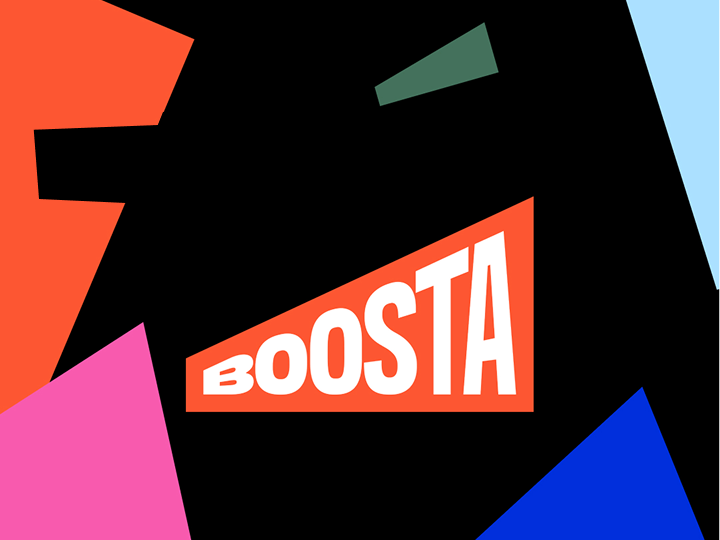

Seven years of end-to-end UI/UX work for a fast-paced product company — designing landing pages across essay-writing and gambling verticals, building a scalable design system from scratch, and driving compounding conversion gains through iterative A/B testing.

Boosta operates dozens of products across multiple verticals — essay writing, gambling, lifestyle. By the time I joined, each product team was shipping landing pages independently, with no shared visual language, no shared components, and no shared measurement of what actually moved conversion.
Every new page started from scratch. Designers reinvented the same buttons, forms, and trust signals. Developers re-wrote the same CSS. Marketers had no baseline for "this is a Boosta page."
I came in to fix two things at once: raise the quality bar of individual landing pages, and build the system that would make every page after them faster, cheaper, and more measurable.
Reviews, ratings, guarantees were rendered differently on every landing — users were silently re-orienting on every page.
Every A/B test required a from-scratch build. Designers and devs spent more time on plumbing than on testable hypotheses.
Hero sections led with features, not outcomes. The clearest value proposition was buried in the third scroll.
Audited every existing landing, catalogued every reusable pattern, mapped what was actually driving conversion in heatmaps and session replays.
Built a Figma library from scratch — tokens, components, content guidelines — paired with a Storybook the dev team could consume directly.
30+ landings shipped using the new system. Each test fed back into the kit, so the system got smarter as we shipped.
We standardized hero patterns first. The above-the-fold is where 90% of conversion is decided. Three tested hero patterns became the system's backbone — every new landing started from one of them, then iterated.
We made the system available to non-designers. Content marketers got pre-approved layouts they could combine without a designer in the loop. This unblocked the team's velocity without dropping the visual bar.
We treated the brandbook as a product. Built a full corporate identity and ran company-wide design onboarding — so consistency was inherited, not enforced. New hires across departments now ship on-brand work from day one.
Cumulative uplift across A/B-tested landings using the new system, measured over rolling 6-month windows.
Reduction in landing-page build time once the design system and component library were adopted by the dev team.
From concept to dev handoff, across essay-writing and gambling verticals — and counting.
The design system should have shipped before the first batch of landings, not in parallel. We paid a real tax retrofitting early pages onto the new tokens — a tax I'd avoid by stopping production for two weeks up front.
I should have invested earlier in shared measurement. We had A/B-test infrastructure but no shared dashboard of what worked across verticals. Once we built that, learnings compounded — and we should have built it sooner.
Brand onboarding for non-designers was the highest-leverage thing I did. I underestimated it at the time. Next time it's a Week 1 project.